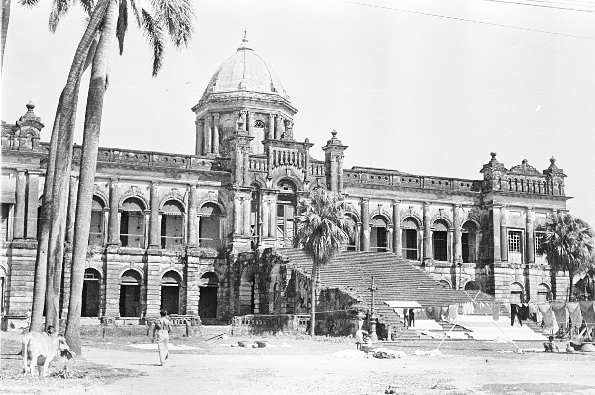

Ahsan Manzil is a palace located in the Kumartoli area of Dhaka, Bangladesh. It was formerly the residence and seat of the Nawab of Dhaka and has been designated an Old Dhaka Heritage Site. It now serves as a museum.
The History Of Ahsan Monjil
During the Mughal Empire, Sheikh Enayet Ullah, Zamindar of the Jamalpur Porgona district, had a garden house on this property and later added a palace, which he called Rongmohol. He was buried on the northeast corner of the palace yard but his gravesite was ruined at the beginning of the 20th century. His son Sheikh Moti Ullah sold the property to French traders, who erected a trading house beside the property. After changing hands a number of times over the next several centuries, the property was purchased by Khwaja Alimullah in the 1800s. Alimullah renovated the property, turning the trading house into a residence and adding a stable and family mosque. After his death, his son Khwaja Abdul Ghani named the property Ahsan Manzil after his son, Khwaja Ahsanullah. He continued renovations; the old building was renamed Ondor Mohol and the new building was called Rangmahal.
On 7 April 1888, a tornado severely damaged Ahsan Manzil and it was temporarily abandoned. With the exception of Rangmahal, which only required repairs, all buildings had to be rebuilt. Abdul Ghani and Ahsanullah continued renovations. What was previously the French trading house was rebuilt as a two-storey building similar to the Rangmahal. A wooden bridge connected the first floors of the two buildings. The palace was repaired again following the 1897 Assam earthquake. After Ahsanullah's death in 1901, the property again changed hands due in part to disagreements within the family. It was a slum for a period before the government acquired it in 1952 under the East Bengal Estate Acquisition Act. It was made the formal seat of the Nawab of Dhaka but due to financial constraints, it fell to disuse. It again passed under multiple owners for the next several decades.
The Government of Bangladesh acquired the palace and property in 1985 and began renovating it, taking care to preserve the remaining structure. Renovations were completed in 1992 and ownership was transferred to the Bangladesh National Museum. Part of the northern side of the property was given to the Dhaka City Corporation while half of the Andarmahal and the Nawab residential area were beyond acquisition.[clarification needed] Just under 5 acres (220,000 sq ft) was then used for the musem.

Architecture
Ahsan Manzil was built on a 1 metre (3.3 ft) raised platform and the palace measured 125.4 metres (137.1 yd) by 28.75 metres (31.44 yd). There are 5 metres (16 ft) porticos on the northern and southern sides of the palace. The building itself faces the Buriganga River. On the river side is a stairway leading up to the second portal. A fountain previously sat at the foot of the stairs but was not rebuilt. Along the north and south sides of the building are verandas with open terraces.
The palace is divided into the eastern side, the Rangmahal, and the western side, the Andarmahal. The Rangmahal features the dome, a drawing room, a card room, a library, a state room, and two guest rooms. The Andarmahal has a ballroom, a storeroom, an assembly room, a chest room, a dining hall, a music room, and a few residential rooms. Both the drawing room and the music room have artificial vaulted ceilings. The dining and assembly rooms have white, green, and yellow ceramic tiles.
The dome is at the center of the palace and is complex in its design. The room at its base is square with brickwork placed around the corners to make it circular. Squinches were added to the roof corners to give the room an octagonal shape and slant gradually to give the dome the appearance of a lotus bud. The dome's peak is 27.13 metres (89.0 ft) tall.